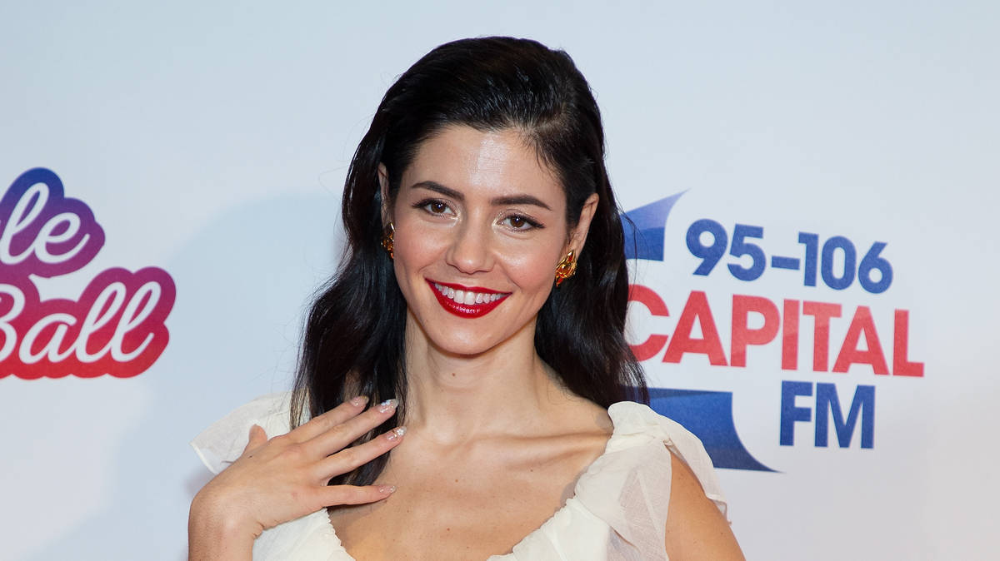
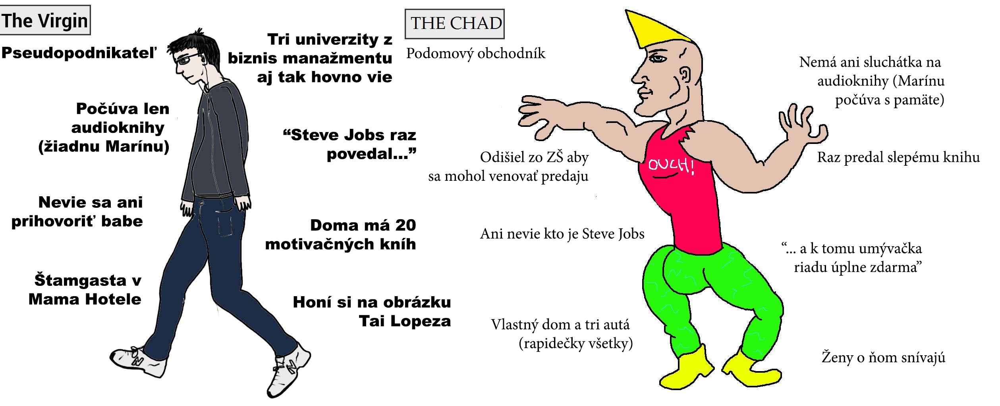

MARINANDTHEDIAMONDS, AMERICKÝ SEN A PREDÁVAČI SNOV
Kreppius | Článok
Vitajte späť pri karanténnej tvorbe aka "nemám moc čo na robote". Speváčka MarinaAndTheDiamonds (celé meno nebudem furt vypisovať čiže od teraz len Marína) by sa dala kategorizovať do pop žánru. Mnoho z vás si povie "ja pop nepočúvam tam len samé debilny púšťajú". Dobre. Chápem. Snažíte sa byť špeciálny. Možno ohúriť tu babu vo vedľajšej lavici čo furt chodí v čiernom. Ale Marína by vám niečo chcela povedať.
Je veľmi ťažké sa v popovej hudbe stretnúť s niekým kto spieva alebo hovorí dačo proti systému. Je to hlavne preto že väčšina týchto celebrít sú presnými produktmi tej doby a ak majú aspoň štipku inteligencie vedia že sú len korporátny výrobok ktorý sa dá počúvať akurát tak v aute keď sa ráno trepete v zápche do roboty. Preto väčšina textov sa dá zhrnúť do jednej vety alebo slova: väčšinou láska, smútok, obdiv, raz za čas aj drogy alebo niečo podobné. A po čase vám je už z toho na grc (ja dodnes mám tik keď počujem Coopera ako začne s Tell me something giiiirl). Práve Marínu si môžete pamätať ako autorku práve takejto pesničky, v roku 2012 totiž vydala pieseň menom Primadona, ktorú si pamätám že Funrádio točilo asi tak 5 krát za deň. A preto je mi príjemným prekvapením že ešte dva roky predtým vyšla pesnička Oh No!, o ktorej je v podstate tento celý článok.
Nechcem sa hrať na veľkého Oxfordského mača a hádzať vám tu mená a knihy a preto všetko čo poviem berte zo štipkou humoru. Možno Marína len napísala dačo čo mne hraje v hlave posledné dva týždne a vôbec tým nemyslela to čo som si ja s toho zobral. Ale no čo už.
Pesnička začína nevinne, bubny a ostatné prkotiny (niesom expert) ale keď Marína začne spievať tak hneď príde prvá veta, pri ktorej sa mi už vybavuje tieň predavačov snov (Tai Lopez a podobná banda).
"Don't do love,
Don't do friends,
I'm only after success."
Preklad: "Nestarám sa o lásku, nestarám sa o priateľov, všetko čo chcem je len úspech."
Práve táto veta mi pripomína svetonázor mnoho pseudopodnikateľov. Teraz nemyslím naozajstným ľudí čo majú za sebou toho veľa a tých sedemnásťročných ktorý po prečítaní autobiografie Steve Jobsa si povedali že ich životný ciel je priniesť na svet nové koleso alebo Ipad. Presne tí ľudia čo vám budú vyprávať o spoločnosti a jak nikto nič nerobí na každej oslave (a ako posledný debilovia budú sedieť v rohu s Gin and Tonikom) a jak oni budú raz bohatý lebo oni vedia ako na to. Ich večere sú strávené pozeraním motivačných videí na Internete, čítaním tých motivačných "kníh" a honením si pred zrkadlom.
Je to určitá bublina kde sa stanete tak egoistickým magorom že si myslíte že bez nápadu a štipky úsilia to dotiahnete ďaleko a preto odmieta randiť a chodiť na párty a celkovo mať troška srandy. Je to celá len fasáda kde si niekto myslí že je inteligentný len tým že vstáva o pol hodinku skorej ako zvyšok.
Práve touto vetou Marína otvára celkovú problematiku. Vo videu sa hrá presne na človeka čo si myslí že toto je správny svetonázor a že ona je práve ta vyvolená čo to dotiahne ďalej. Ale poďme ďalej.
"Don't need money,
Don't need fame,
I just want to make a change..."
Preklad: "Nechem prachy ani slávu, ide len o to aby som spravila zmenu"
A zas sme spať. Koľkokrát ste počuli milionára že nerobí to pre peniaze ale pre ľudí a svet. Úúúú super. Ja som niesom proti tomu aby sa zarábali peniaze lebo šak každý potrebuje jesť (niektorý aj na jachte) ale myslíte si vážne že keby v tom neboli prachy tak by toľko ľudí bolo v tom celom biznise? Myslíte si že keby títo pseudopodnikatelia nevideli víziu prachov a supermodeliek tak by si nekupovali kurzy za tisíce eur aby sa naučili "ako predávať"? Áno sú špeciálne prípady ktoré by to robili aj bez peňazí ale tých je menej ako tanečníc v tomto videoklipe. Jasné že to robia pre prachy. Alebo aspoň pre sen.
Preto týchto ľudí, motivátorov, volám predavači snov. Lebo nič iného nepredávajú. Len ilúzie a zbytočné kurzy. A teraz príde naozajstná podpásovka: oni na tom zarábajú. Narozdiel od vás. Xd.
"I know exactly what I want and who I want to be
I know exactly why I walk and talk like a machine
I'm now becoming my own self-fulfilled prophecy
Preklad: viem presne čo a kto chcem byť, viem presne prečo rozprávam a kráčam ako stroj, pomaličky sa stávam mnou vytvoreným proroctvom
Práve pri refréne sa objavujú prvé trhliny. Marína si uvedomuje že má svoj sen a že sa správa ako stroj počas toho. Ale nakoniec ona dopadne dobre. Alebo?
A práve tieto tri vety vedia zosumarizovať týchto pseudopodnikateľov. Oni sa už vidia na pódiu ako im ľudia tlieskajú, investori podávajú drahý koňak a následne zo svojou desinkou v Audi A8 odchádzajú na Bahamy užívať si úspech. Väčšinou sú ale radi keď po dlhom dni v práci sa na starej Fábií vedia do dvoch hodín dotrepať do ich prázdneho životaprázdného bytu. Ach jaj.
Ako spoločnosť sme pokročili do štádia kde treba ľudom predávať pekne zabalenú kontrarevolúciu. Americký sen už zomrel ale dakto zistil že ak ho troška prebalíte a dáte mu iné meno tak zrazu máte úplne nový produkt. A práve toto prináša na svet všetkým týchto pseudopodnikateľov a mnoho inej zberby (o nich si ešte povieme) ktorá si myslí že idú zmeniť ako všetci myslia a pritom len stále ostávajú v hraniciach spoločnosti.
Povedzme si to úprimne. Ako sa domov dotrepete s roboty, nič sa vám moc nechce robiť. A ja chápem. Aj mne sa chce hodiť pred telku a pozrieť si seriál alebo dačo. Je to pochopiteľné že ľudia sa v piatok ožerú ako svine alebo že si nájdu partnera alebo ku aby sa s ňou vedeli o niečom porozprávať a potom v noci možno aj nejaké to čoromoro.
Ale títo ľudia namiesto toho aby toto robili tak oni si pustia po tretí krát Elona Muska. A čítajú motivačné knihy. A píšu si hovadiny do denníka.
Podobne ako pozeranie Netflixu a porna vás nikam neposunie, tak ani tieto knihy vás nika neposunú. Ale ako naša stará známa Marína povedala títo ľudia sú roboti ktorý majú ilúziu že každým slovkom sú bližšie k tomu aby boli Steve Jobs a aby mali svoju vlastnú firmu. Ale čo čítajú sú sračky. Pardón za výraz. Ale tie knihy by boli lepšie použité ako atrapy na prednášky o recyklácií v školách ako nejaký materiál na čítanie.
A Marína si to uvedomuje. Ale pravé Morfeusové tabletky (tie červené) prídu až v druhej strofe.
"If you are not very careful,
Your possessions will possess you"
Preklad: ak si nedáte pozor, vaše vlastníctvo si privlastní vás
Ajajaj. A tuna to celé padá. Neviem či Marína videla film "Fight Club" (podľa portálu Genius hej) lebo niečo podobné hovorí aj Tyler Durden v tomto filme. Je to práve príprava na tento Americký sen.
No poďme si to teda vysvetliť. Aj keby nejakým zázrakom ste sa stali podnikateľom a máte teraz veľa prachov na účte tak pravdepodobnosť že si začnete kupovať veľké veci je veľká. Väčšie auto, väčší dom, väčšie hocičo čo vám príde pod ruku. Postupom času si ale uvedomíte že aj keď tie veci sú prepísané na vás tak oni vás vlastnia.
Nemáte slobodu ani mobilitu. Keby ste nejakým spôsob stratili svoj biznis (úprimne je to dosť ľahké) a tým pádom svoj tok peňazí tak tieto veci čo máte na krku sa stanú ťažobami ktorých sa ťažko zbavuje. Keď staviate veľký dom, nahrnie sa vám tam každá firma v okolí ale keď ten veľký dom predávate tak máte šťastie na jedného záujemcu na rok. A práve skombinujte toto s nervozitou ktorú máte lebo postupne vám dochádzajú peniaze na ten dom a tie pohodlné seansy na balkónoch s drahou whisky a tabakom už niesu také kľudné. Produkty na ktoré ste boli hrdý že ich vlastníte vám zrazu dali šach mat.
A toto je prečo Americký sen zomrel a prečo vykopávať jeho hrob je ešte horší nápad. Lebo každý si to po určitom čase uvedomil. Aj keď je ten veľký dom pekný a susedia vám budú závidieť koniec koncov je to len zbytočná starosť do už sám-od-seba komplikovaného života. Napríklad kto to bude upratovať a sa o to starať (určite nie tá vaša supermodelka). Ďalšie prachy. A takto sa vám to kopí až nakoniec skončíte na ulici alebo na kardiovaskulárnom oddelení.
"TV taught me how to feel,
Now real life has no appeal"
Preklad: Televízor ma naučil čo cítiť, reálny život už nieje pre mňa príťažlivý
No Marína asi pozerala moc romantických filmov. A práve toto jej ničí život. Ale aj vám. Práve telka kde je všetko namočené do medu a aj v realitných šou to vyzerá že každý žije lepší život ako vy. Telka vám dáva vaše osobné Americké sny a vy sa snažíte vašu existenciu prispôsobovať tomu. Preto tie drahé výlety. Preto ten dom. Preto ten tabak. Chcete žiť ako Kardiashianky ale chcete zároveň byť aj Steve Jobs.
A práve tuna je hlavný problém s pseudopodnikateľmi. Vidia prachy a úspech vo všetkom lebo si myslia že oni majú nejaký božský dotyk a to celé zmenia. Ich domy a ich autá sa nekupujú až potom čo zarobili slušnú sumu. Ich autá a domy sa už dávno kúpili v hlave a dokým si neprispôsobia realitu tak nebudú spokojný. Furt budú vyplakávať, kupovať si kurzy, čítať knihy a nič nerobiť.
A tam tkvie hlavný problém. Nič nerobia. Len si do hlavy pchajú sny a ilúzie a tam to asi končí. Silné slová, slabé činy. Každý s nich len pri pomyslení na niečo produktívneho už hneď má v slipoch kaliko. Niesu to muži činu ale muži kníh a "intelektu". A práve preto sa nikdy nikam ako ľudia neposunú.
"I'm gonna live,
I'm gonna fly,
I'm gonna fail,
I'm gonna die"
Preklad: Budem žiť, budem lietať, padnem a zomriem
No Marína v týchto veršoch ide do absolútnej depky. Ale pre nás len dobre lebo aspoň mám o čom písať.
Ale aj keď poviete slovo zomrieť hlavne tuna v Európe, tak sa na vás všetci pozeráte že prečo ste taký depresívny. Aj je to pravda. Pre pseudopodnikateľov je neúspech smrť, lebo im to ničí bublinu. Preto čítajú motivačné citáty typu, s chýb sa učíme a ten kde je odfotený Jordan a že koľko košov netrafil.
Ale to nestačí. Pri chybách sa sparing obracia proti nim a realita im dáva peknú pravačku. Práva tuna padá fasáda a aspoň na zopár sekúnd títo ľudia prestávajú veriť v to že to dokážu. A namiesto toho aby sa pozreli na ich šance tak sa rozhodnú pokračovať ďalej. Ďalšie video. Ďalšia kniha. Ďalšie obdivovanie v zrkadle. A cyklus sa opakuje.
A robia toto až do smrti. A potom idú vravieť o živote ktorý prežili naplno. No ja viem a poviem čo je prežiť život na plno.
Je to si len niekedy sadnúť nezáväzne na pivo. Je to pobozkať večer vašu ženu a povedať jej že ju máte radi. Je to pozrieť si v kine nejaký sprostý film. Je to byť človekom ktorý nie je perfektný ale ani sa o to nesnaží. Je to nevidieť život cez okuliare peňazí alebo biznisu ale cez okuliare človeka a náhody.
Lebo prežiť život zahĺbený v knihách a nič nerobiť je život ktorý je premárnený. Väčšinou treba povedať kašľať to a proste skúsiť dačo nové. A často to proste príde a žiaden kurz vám nepomôže ani kniha. Lebo život sa nedá naštudovať a práve to je na ňom pekné: nie je to túra v skupine ale skôr prechádzka. A tak sa kurník prestaňte tváriť že je to niečo viac.
Americký sen neexistuje. Podnikatelia bez nápadu neuspejejú. Knihy vám nepomôžu. Vaša hlava a myslenie na peniaze vám nepomôže. Tak prestaňte sa tváriť že vy ste našli niečo viac ako život samotný lebo máte doma tri motivačné knihy dočítané. Nečítajte, konajte. Robte dačo. A hlavne nezabúdajte že na živote sa treba smiať aj na malých sprostostiach a nie sa tváriť seriózne celý deň.
O a ešte niečo. Marína tebe posielam božtek. Sprav prosím pesničku o komunistoch aby som aj o nich mohol písať. Ďakujem. Cmuq, cmuq.
 23. júna 2020